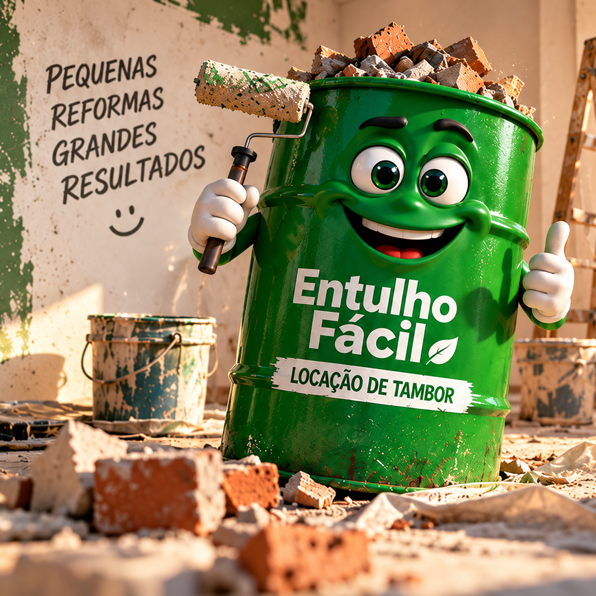
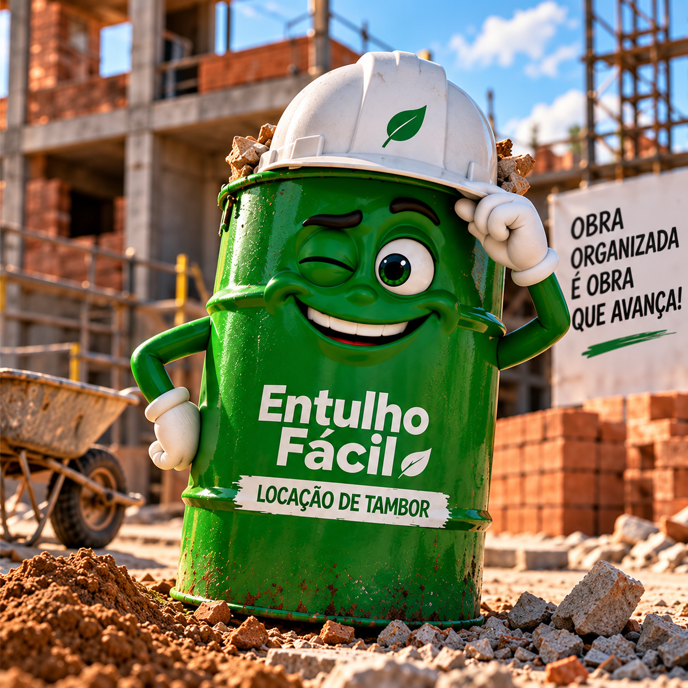
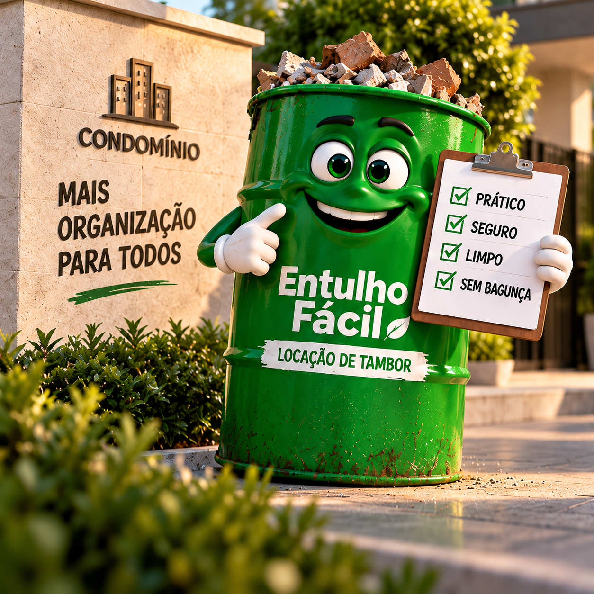
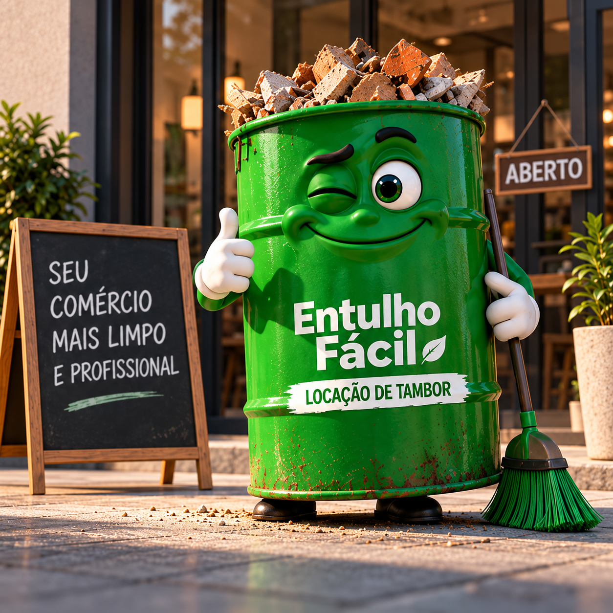

Você pede
Entre em contato pelo WhatsApp e faça seu pedido.
Locação de tambor para entulho
Encheu? A gente retira.
Locação de tambor para entulho em Piracicaba, de forma rápida, prática e sustentável. Ideal para obras, reformas, condomínios e comércios.
Do pedido à retirada
Simples assim. Sem complicação.
Entre em contato pelo WhatsApp e faça seu pedido.
Deixe o tambor no local e encha com o seu entulho.
Quando estiver cheio, é só nos avisar que retiramos rapidinho.
Mais tranquilidade para você
Uma solução completa para você focar no que realmente importa.
Seu espaço limpo e seguro.
Facilita o dia a dia da sua obra ou reforma.
Agilidade na entrega e na retirada.
Descarte correto e mais respeito ao meio ambiente.
Para todos os tamanhos de projeto
Seja qual for o seu projeto, o Entulho Fácil está com você.

Da pequena reforma à grande mudança.

Mais organização no canteiro de obras.

Solução prática e sem dor de cabeça.

Seu negócio sempre limpo e em ordem.
Mais organização para sua obra
Atendimento rápido e sem complicação.
Fale com a nossa equipe pelo WhatsApp.
Ainda ficou alguma pergunta?
Se não encontrar sua resposta, fale direto com a nossa equipe.
Resíduos de construção, como tijolos, pisos, concreto, madeira e materiais de reforma. A equipe orienta sobre materiais não permitidos.
Trabalhamos com o tamanho ideal para reformas e obras de diferentes portes. Consulte a disponibilidade para a sua região.
Combinamos o período de locação conforme a sua necessidade e a disponibilidade de retirada.
Atendemos Piracicaba e as proximidades. Fale com a gente pelo WhatsApp informando o endereço da obra e confirmamos rapidamente.
Quando o tambor estiver cheio, envie uma mensagem no WhatsApp e combinaremos a retirada.
A obra continua. A bagunça não.
Fale com a nossa equipe e encontre a solução ideal para a sua obra.
Conversar pelo WhatsAppTamo junto
na sua obra!